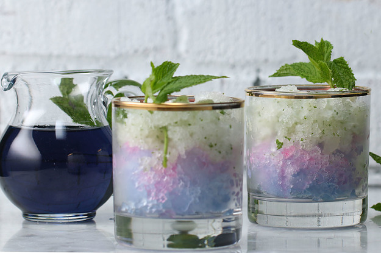

1. Fill ⅓ of a tall glass with regular crushed ice. Fill the rest with the crushed magic ice. (Optional - add a dash of shimmery luster dust).
2. Pour about ¼ - ⅓ cup of the lemon syrup into the glass and top it with club soda (or lemon lime soda).
3. Add some extra crushed magic ice on top and serve with stirring sticks and straws.

C O L O R C H A N G I N G
L E M O N A D E

BEGINNER
STEP THREE: Making the Color- Changing Lemonade (Galaxy Lemonade Slushie)
A Way To Serve The Audience
1. Fill ⅓ of the glass with regular crushed ice. Pour ¼ - ⅓ cup of lemon syrup and stir and serve with stirring stick and straw.
2. Fill the glass with crushed magic ice in front of your guests, and top it with club soda. Let them stir and see more of that colorful magic while they enjoy the drink!
Did you know that you can cause a packet of ketchup to rise and fall on command in a bottle of water? People might even think that you have the ability to move objects with your mind! The truth is that you don’t have the gift of telekinesis. You actually just know a really cool science trick!
Materials needed: Regular Crushed Ice or Shaved Ice, Crushed Magic Ice, 1/4 cup - 1/3 cup Lemon Syrup Per Drink, Club Soda
STEP ONE: Preparing the Ingredients - Magic Ice Cubes
Materials needed: 25-30 dried blue pea flowers, 2 ½ cups of boiling water
1. Steep the dried blue pea flowers in boiling water for about 20 - 30 minutes, until the water has a very deep blue color - the darker the color the better!
2. Strain the tea, and pour it into ice cube trays. Freeze until completely frozen (overnight).
3. When needed, crush the ice in an ice crushing blender. (You can use some extra water to help with blending the ice, but remember not to completely crush all of the ice and to have some small chunks intact).
4. Keep in the freezer until needed.
STEP TWO: Preparing the Ingredients - Lemon Syrup
Materials needed: 2 cups of lemon juice (about 10 - 12 lemons), 1 ½ cups of sugar (white or brown sugar will work)
1. Mix the lemon juice and sugar in a saucepan and heat over medium heat. Stir to dissolve. Bring the syrup to a simmer and simmer for about 10 minutes until slightly thickened.
2. Let the syrup cool down and store in a bottle in the fridge. This lemon syrup can be diluted at a 1:3 ratio to make regular lemonade.
The Science Behind the Reaction
All the “blue fruits” and “blue vegetables” like blueberry, blackberry, black raspberry, eggplant, purple cauliflower, red cabbage, and blue pea flowers (butterfly pea/blue pea flower) etc.
all contain a water-soluble pigment called Anthocyanin – which is responsible for the purple to blue hues in these fruits and vegetables. Blue pea flowers are the only
flowers that can be used to extract a natural blue color that’s soluble in water (the flower itself is dark purple/blue).
Anthocyanin actually changes its color depending on the pH level of the solvent it’s in, and therefore is a natural pH indicator. So it can change from orange to pink to purple to yellow depending on whether
it’s in an acidic or basic solution.
It’s due to the acidity in lemon that the blue crushed ice turns beautiful shades of pink/purple!